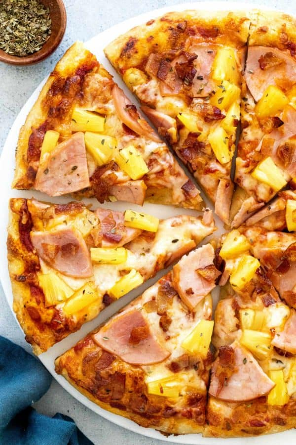

Pizza

Description
Hawaiian pizza is the best pizza hand's down! Here is a recipe of hawaiian pizza made with thin crust, pineapple, and ham. Try it out, you won't regret it ;)
Ingredients
- Tomatoe Sauce
- Pineapple Pieces
- Turkey Pieces
- Mozzarella Cheese
- Thin Pizza Crust
- Start the process by going to Costco and buying thin pizza crust
- Grab some canned tomatoe sauce and apply that bad boy to the crust
- Add some oregano spice to your pizza crust
- Apply your mozzarella cheese on the pizza crust
- Open a can of pineapple and generously add pineapple to your pizza crust
- Generously add turkey pieces to your pizza
- Place your pizza on the oven and turn up the temperature up to 1000 degree Celsius
- Your pizza should be done after 3 minutes